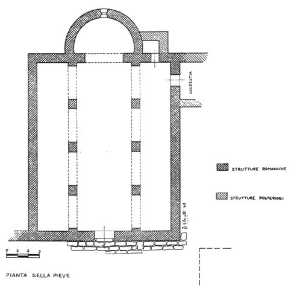

|
L'architettura della chiesa La pieve di Marmoraia, che si ritiene edificata agli inizi dell' XI secolo, fu varie volte rimaneggiata fino ad epoche relativamente recenti. E' una chiesa costruita in calcare locale, che si presenta attualmente a tre navate, divise da archi impostati su pilastri quadrangolari e con una sola abside terminale con finestrella a doppio strombo. Essa nella sua estrema semplicità e mancanza di decorazione, sembra derivare dagli edifici preromanici padani (Ava era di origine longobarda), anche se non è da escludere che sulla grande semplicità abbia influito la povertà della zona. Arte modesta, quella del primo romanico, ma sempre interessante per la sua spiccata cura dei particolari e spesso viva e colorita d'impronte paesane e locali. Le absidi erano in origine certamente tre, poichè di quelle laterali, oggi non più esistenti, gli ultimi restauri hanno messo in evidenza dall'interno gli archi di apertura. Può darsi che siano state demolite quando furono sopraelevate le navate laterali per sovrapporci altri ambienti, coprendo la travatura in legno, con volte a mattoni (in totale contrasto col carattere della chiesa), che danno alla facciata quell'aspetto di capanna. Dalla trasformazione, rimane comunque visibile la traccia di quella che doveva essere la forma primitiva. In un inventario del 9 aprile 1639, conservato nell'Archivio Vescovile di Colle val d'Elsa, tra gli atti relativi agli anni che vanno dal 1594 al 1761 (n.1076 d'inventario), della Cappella dei SS. Gervasio e Protasio a Marmoraia, vi è notizia che già in quell'epoca la costruzione dei due ambienti sulle navate laterali era già avvenuta. In questo inventario, è citata infatti "un'altra stanza che risponde sopra quella parte della chiesa dove è l'altare dei Santi sopradetti" (SS.Gervasio e Protasio). Sulla parete opposta, anche se non visibile dall'esterno, c'è anche una meridiana, priva dell'asta, scolpita nella pietra. Sulla facciata si aprono quattro grandi finestre allungate che illuminano l'interno, delle quali forse soltanto le due di centro sono originali, mentre le altre sono state sicuramente aperte molto dopo. Di grande semplicità anche le porte di accesso, sia quella di facciata, sia le due laterali, oggi murate, di cui quella sul fianco sinistro risponde all'interno di un'abitazione. Queste porte, secondo un sistema assai diffuso negli edifici romanici della zona, sono costituite da un semplice arco richiuso, che sormonta l'architrave in pietra. Addossata al fianco destro della chiesa (l'originale canonica), resta la traccia di una loggetta, con pilastrino in laterizio, presumibilmente quattrocentesca. L'altare di sinistra, come si legge in un'iscrizione, fu fatto erigere nel 1728 dal rettore Simone Tinacci, forse durante i lavori di trasformazione della chiesa in stile barocco, a cui probabilmente si rifà anche l'altar maggiore in finto marmo. Sempre di quell'epoca, intorno al 1730, il fonte battesimale. Trascurata per decenni dalla Soprintendenza ai Monumenti, con parte dei soffitti pericolanti, adesso è stata restaurata, con rifacimento del tetto e dei solai. Dei resti che comprendono alcuni tratti della cinta muraria, particolarmente ben conservato è quello di fronte alla chiesa, con portale di accesso ad arco ribassato e fiancheggiato da due arciere sul lato ovest e da due belle arciere-archibugiere sul lato nord. Invece ad un intervento più tardo si riferisce probabilmente il basamento a scarpa, sormontato da cordone, di una torretta rotonda a destra della facciata della chiesa.  L'attuale campanile, ingenua interpretazione in stile neo-gotico, si presume che risalga al secolo scorso. Le campane sono quattro. Nella prima vi è inciso: "Giovanni Feri fece nell'anno 1832"; poi ve ne sono due con scritto "Salvatore Rafanelli fonditore in Pistoia 1886" e infine l'ultima, con sole decorazioni a rilievo, senza data. Il campanile primitivo, per l'individuazione di alcune pietre affioranti dal suolo, sarebbe stato sulla destra, poco discosto dalla facciata e simile a quello di Pernina.
  
|